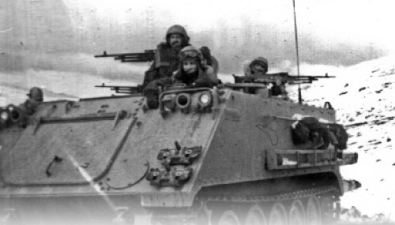

Chassid at War
As someone who served in the Reserves, I know that in situations like these you represent all of religious Jewry to the other soldiers, as well as the Rebbe and the Creator of the universe Himself! We spent endless hours talking about Judaism, mitzva observance, etc. * R’ Zev Crombie shares his remi

Our reserve unit was drafted towards the end of the war. I remember that Thursday afternoon when I returned home from work and a soldier came to my house with the famous “Tzav Shmoneh” (emergency call for duty). I took a ladder and climbed up to the boidem (crawl space used for storage) to get out my gun and uniform. I left the house with a terrible feeling. I wondered whether I would see my family again and whether I would return on my own two feet.
There was something amusing about this story though. After the children saw me climb up to the boidem, my wife put them to sleep. The next morning, when they woke up, one of the little ones looked for me up in the boidem, the place where he had last seen me. He continued looking for me there all morning for a number of weeks, until I finally returned home.
THE REBBE’S BRACHA THAT KEPT ME GOING
In those days there was no email and not even faxes. If the matter was urgent, the only way to ask for a bracha from the Rebbe was to try and call the office and ask one of the secretaries to submit a note to the Rebbe. The phone there was always busy, so that in order to reach them, you had to spend hours dialing and redialing. I did not have time to do this, so I had to do what they say about R’ Mendel Futerfas, and submit a request in my mind. Apparently the pidyon nefesh was accepted and I saw that the Rebbe’s bracha was with me, as I will relate.
Throughout the war I constantly thought about how I had received letters from the Rebbe upon the birth of my children. These letters said, “May you merit to raise him together with your wife.” I believed that the Rebbe’s bracha that I would merit to raise the children together with my wife would be fulfilled.
A SHABBOS MINCHA IN A LINE OF ARMORED PERSONNEL CARRIERS AND TANKS
I traveled to the emergency depot of the infantry brigade in which I served and we spent all of Friday preparing armored personnel carriers (APC’s) for war. Friday afternoon we left in a long convoy for the north of the country. While everyone else went to shul to welcome the Shabbos Queen, I traveled in a line of buses followed by all the semi-trailers that carried our APC’s. Police cars led the convoy and they cleared all the junctions until we arrived at the Rosh HaNikra crossing. We crossed the border into Lebanon as Shabbos arrived and I made Kiddush for my comrades as we traveled on the bus. Our Shabbos meal consisted of a bottle of wine that the military chaplain had given me before we set out, and a few crackers that we took out of our combat rations.
The trip took all night with our long convoy stopping often because of terrorist shooting. In the morning, at a stop in a village, a halachic discussion ensued between me and the military chaplain. Irreligious soldiers had gotten off the bus to buy water and had offered to buy some for us, which we could pay for after Shabbos. We were very thirsty and we had no water for netilas yadayim. The issue was: Is it permissible for a soldier to buy water for us and hold onto it until Motzaei Shabbos, at which time he would give it to us?
We arrived close to Beirut on Shabbos afternoon and could hear the sound of shooting. We got off the buses (just picture the way it was back then – we went to war on Egged buses!) and transferred the equipment to the APC’s. I had no question about carrying weapons and ammunition, but I wondered whether it was permissible for me to carry my personal belongings in a place without an eiruv. I finally decided that my personal belongings were essential for me during the war and I carried them too.
By the time we had been drafted, the IDF had already managed to conquer the area and our job was just to eliminate any remaining enemy soldiers. We began moving eastward along the Beirut-Damascus axis. We entered the Baabda district and were warmly welcomed by the residents. I remember that as we passed through the streets, all the porches of the houses on both sides of the street were full of people rejoicing at our arrival. We were welcomed with rice, juicy apples and bags of cold drinks.
In the days to come, we continued cleaning out the villages east of Beirut. We did not have enough food or water, but we were most concerned about having enough gas for the APC’s. All along the way, we saw burned out Syrian tanks, but we also saw burned tanks of our own. It was a sad sight.
I remember the Mincha we davened one Shabbos. It was when we traveled in a long line of APC’s and tanks through one of the towns. The line moved slowly and stopped occasionally to eliminate terrorists who tried to attack us. One of the times we stopped, I saw that the sun was about to set and I wondered how I would daven Mincha. I could not get off the APC since the area was not yet terrorist-free.
The long line of tanks and APC’s would stop every so often. I suddenly noticed that in the tanks moving together with us (that did not belong to our unit) there were a number of Hesder soldiers. I yelled out “Mincha?” to them as though I was in 770 and not in a Lebanese town swarming with terrorists.
We quickly organized for a speedy Mincha that we will never forget. We could not assemble in one place, but each of us stood on the deck of the carrier or tank. With tremendous concentration, we davened to Hashem that we should succeed in our mission and return home safely.
One night, we arrived at an olive grove near a Lebanese village and we set up camp for the night. In the morning, I looked for a place where I could daven and discovered that the entire area we were in was full of dry cow and sheep manure. At any other time, I would have moved away a bit and found a cleaner place to daven. That was impossible now because any slight movement away spelled danger from a sniper or even a kidnapping. I didn’t know what to do. On the one hand, it is forbidden to daven near dry manure. On the other hand, finding another place was dangerous. I ended up deciding to daven where I was and I hoped that Hashem would agree to accept my prayer among all the other prayers of the Jewish people.
GREAT INSPIRATION TO PUT ON T’FILLIN
Another time, we were camped on a hill as the terrorists began tracking our position with mortars. The shelling was getting closer and closer. Anybody who’s been in this situation knows how terrifying it is as you wonder where the next shell is going to land. It was during this time that I got up my courage and took out t’fillin and began going from trench to trench to put t’fillin on with people. The response, as expected, was huge. The soldiers begged to put on t’fillin, feeling that this would protect them.
I especially remember one fellow who was a member of a HaShomer HaTzair kibbutz (which is virulently anti-religious) in the south. We had spent many days in the Reserves together and he always loved taunting me and describing how the kibbutz members would eat ham and cheese sandwiches on Yom Kippur. May Hashem have mercy on people who are so abysmally ignorant. Anyway, despite being good army buddies in the context of our military duties, he never agreed to put on t’fillin. The only time I managed to pierce the wall of his opposition was on that hill, when the falling shells were landing ever closer to us. I offered him t’fillin and he said grudgingly, “Fine, only because you want it so much.”
In the Reserves you meet with people who you would have nothing to do with in civilian life. In our unit we had an interesting combination in the commander and the assistant commander. The commander was very involved in Shalom Achshav (Peace Now, a virulently Leftist organization that curries favor with Arabs). The assistant commander was a leader of Gush Emunim (a Right wing settlement movement) who lived on a yishuv south of Har Chevron. The rest of the soldiers were divided over the political and societal spectrum.
Notwithstanding these extreme differences, when it came time to carrying out some military maneuver, all worked together. Furthermore, in an infantry unit like ours, ranks did not always have significance. Plain soldiers, sergeants and officers evenly divided all the guard duty and jobs (the only exception being that officers were exempt from kitchen duty).
Those who served in the Reserves know that in situations like these you represent all of religious Jewry to the other soldiers, as well as the Rebbe and the Creator of the universe Himself! We spent endless hours talking about Judaism, mitzva observance, etc.
A topic that came up repeatedly was the Rebbe having said that we need to conquer Beirut and eradicate terrorism. In stark contrast, the prevalent approach in the media was one of capitulation. My comrades in arms were very surprised to hear the Rebbe’s view about subduing terrorism.
A COLD MIKVA IN HONOR OF SHABBOS
One Friday, I tried to think of a way of immersing in honor of Shabbos. In our battle orders there was no difference between Shabbos and weekdays.
I often davened the Shabbos t’fillos while on military rounds and often had the Shabbos meals while traveling on the APC’s. The meal sometimes included just a can of dry rations and a few crackers. It was a serious problem for me when we camped on Shabbos in an open area and it was impossible to put up a temporary eiruv. I could carry only my weapon and ammo belt. I would not take the rest of my personal belongings and food out of their four cubits.
Despite the difficult conditions, I wanted to immerse for Shabbos. One Erev Shabbos I came up with an idea. I suggested to the commander that we take the entire unit on a search mission in the mountains. The entire unit got on the APC’s, the big guns were manned, and we set out.
After half an hour, we discovered a stream in a twist of the road. Two carriers remained to guard us while the rest of the soldiers removed their filthy, dusty clothes and got into the water. The water in the stream was melted snow and was therefore freezing cold, but we enjoyed it tremendously. Of course, by the time we returned, we were sweaty and dusty again, but we were all happy over this “immersion.”
THE MIRACULOUS CROSSING OF A CULVERT
One evening we spent on a night tour of Sidon. It was a ghost town and not a soul could be seen on the streets. There was the fear of death and we had no idea from which direction trouble would come. A terrorist could be hiding in any house and open fire. We finished our tour by morning, thanking G-d that all had been quiet, and we returned to the main base that was within the city. There was a small culvert at the entrance to this base. We crossed it and no more than a second later, a bomb exploded and the culvert blew up with a terrifying noise. There was probably a terrorist in a house in the area who was watching us and when he saw us crossing, he activated the bomb. To our great fortune, he missed us by a second; otherwise, you would not be reading this article.
The noise was so loud that I looked up, thinking all the buildings in the area were collapsing on us. We began shooting in all directions but the terrorist got away. I palpably saw the Rebbe’s brachos. After this miracle I recited the Birkas HaGomel for the first time.
THE MISSILE THAT GOT TANGLED IN THE ELECTRICAL WIRES
We spent a Shabbos in an abandoned school. Although many of the soldiers in our unit were from kibbutzim (in those days, those from kibbutzim still enlisted in combat units), they always had some respect for the dos (derogatory term for religious person) who served alongside them. So when it came time for the Shabbos meal, all the soldiers waited for me until I finished davening and would make Kiddush for them all.
That Shabbos we experienced another miracle. A terrorist shot a missile at us. This missile was guided by a wire and incredibly, the wire got tangled in the electrical wires and the missile fell and exploded fifty meters from us. I saw once again how the Rebbe’s bracha protected us. After this miracle, I said the HaGomel blessing for the second time.
HITCHHIKING ON A MILITARY HELICOPTER
Going home on leave was a story in itself. During the war, we traveled on Egged buses that came nearly till the front. After a while, the terrorists recovered and began attacking military vehicles with explosives. Going home on furlough was a complicated operation. We traveled only in large protected convoys. One way that I found to get back to my position was to go to the military airport in Haifa and to beg the officer in charge to give me a seat on the military cargo plane that went from Haifa to the military airport in southern Beirut. I wasn’t always able to get a ticket and even when I did, I had to spend endless hours hitchhiking until I got back to my post.
One of the times I went on furlough, I saw a military helicopter land nearby. I went over to the pilot and asked him for a hitch home. Such conduct seems crazy by our standards today, but that’s how things were back then. The pilot, who seemed to be a Leftist, said, “I am happy over every additional soldier who leaves Lebanon.” The reason why the helicopter had come was because an assistant commander in the Artillery Corps had driven over a mine in his jeep and the helicopter had come to airlift him out. After the first aid was administered on location, they took the wounded soldier on the little helicopter which flew back to Rambam hospital in Haifa.
Although, during my service, I flew often in helicopters in various training missions, I’ll never forget that flight. We were fifty people in a tiny helicopter, the pilot, the doctor, nurses, me and the assistant commander who lay among us bleeding on the floor. We flew at low altitude southward and passed over southern Lebanon and northern Israel until we arrived at the hospital. All that time, the doctor tried to save the life of the assistant commander. Sitting there squeezed in on the side I watched as life ebbed out of him. When we arrived at Rambam, the emergency team raced to the helicopter to bring the injured man to the operating room. Sadly, he had already died, may Hashem avenge his blood.
SHABBOS OBSERVANCE WHILE IN THE RESERVES IN LEBANON
My connection with Lebanon did not end with the war. I returned to Lebanon several times during my Reserve duty, which I did during the winter at posts that the military had constructed on the snow covered al-Shouf district of Mount Lebanon. Working in the snow was an utter novelty for the IDF and the equipment wasn’t always adequate for the harsh conditions. Heavy snow fell on these mountains and reached a height of a meter or two.
On cold days, the snow was so high that it covered the APC’s out in the yard. Since we were afraid that the engines would freeze and become damaged, we had to turn on the engines every two to three hours and make sure they stayed warm. It was a very hard job, especially at night. Some of the men in our unit had driver’s licenses for APC’s (which we nicknamed Zelda) so we were not assigned drivers. All those with licenses took turns, but each time it was very difficult.
You had to get up in the middle of the night and get out of your warm sleeping bag, put on a ski suit and snow boots and other warm clothing, and go outside in the freezing cold and blizzards that raged on the mountaintop where the post was located. Because of the heavy snowfall, visibility was poor and I had to search to find the snow-covered carriers. When I finally located them, I climbed up and used my shovel to remove the snow that covered the driver’s door (which is located on the upper deck). Then I climbed into the carrier and started up the motor until it warmed up. Then I shut if off and returned to the post, frozen to the marrow of my bones. At the post, I met a soldier’s best friend, the sleeping bag which had gotten cold in the interim, and I slept for another hour or two until it was my turn again.
Guard duty was also exceedingly hard, since they took place in open positions and you were exposed to the biting wind and the snow that blew into your eyes all night. At the end of any of these guard duties I was utterly frozen. Another problem was bathroom facilities. They were located outside the fence, not far from the gate. During the day it wasn’t that much of a problem, but at night, no one dared to leave the perimeter of the post for fear of terrorists.
The problem of kashrus was also very hard since some of the soldiers were from kibbutzim. They took advantage of the scouting rounds that we made outside the post to hunt wild animals. Of course, it was impossible to eat from the kitchen. I brought a small pot and pan from home and every day I cooked my own meals.
On Shabbos, the problem was even more challenging. I had no way of keeping the food warm and frozen food is not edible. One Shabbos, I tried to leave a pot of cholent that I had prepared on a stove that heated our post. To my disappointment, the heat of the stove burned the food to a crisp.
Another problem on Shabbos was the washing of hands and face. The water in the pipes was cold as ice and it was impossible to wash your face with it. Yet, using the warm water immediately activated the water heater, which made it forbidden on Shabbos.
STOPPING AT THE LAST MINUTE
A large part of our work involved the APC’s. We changed jobs every day. Each day, one soldier with a license would drive a carrier while his comrades walked in front of him, clearing the roads up and down the steep mountains. Similarly, since there were a few other division sergeants along with me in our unit, we switched off each day regarding who would be in charge of the team.
One day, when it was my turn to drive the carrier (see the picture at the beginning of the article), as I took it down one of the steep turns, the carrier’s track suddenly cracked. Usually, when a track breaks, the carrier grinds to a halt. This time, something else happened. Since the track broke right in the middle of a twist in the road, the heavy carrier slid on the snow like on a ski run. The carrier, which weighs two tons, quickly slid on the snow for dozens of meters. We could see the edge of the cliff approaching at a frighteningly rapid pace, but we had no way to gain control of the carrier.
It was only when we reached about twenty meters from the edge of the precipice that the carrier finally stopped and we all quickly jumped out, frightened to death. The Rebbe had watched over me yet again. After this miracle, I recited the HaGomel for the third time.
Driving the carrier on snow-covered mountains was very hard. The snow covered the roads so that it was impossible to know where to go and what to avoid. In order to solve the problem, we stuck tall poles along the way and when the road was covered with snow, we followed the poles that were higher than the snow. There were many days when even this did not help, and then we were stuck at the post unable to come and go, and without supplies. We had to ration our reserves until the road opened and we could get new supplies.
One of my stints in the Reserves when I served at a post in Lebanon ended in an interesting way. One night, as I slept in my sleeping bag, I felt a sharp pain. I woke up and saw a mouse that had apparently thought that my finger was made of cheese. It bit me on the end of my finger and ran away. I did not pay much attention to this (especially as I had once nearly entered my sleeping bag during an exercise in the Jordan Valley when, at the last minute, I decided to check it and found a poisonous yellow scorpion inside).
A few days went by until we left the post and arrived at the central base that had been set up at the foot of the mountain. Since we had to stay there for several hours and I was bored, I decided to go to the doctor and tell him that a mouse bit me. The doctor opened up one of his books and told me that all mice in Lebanon were suspected of carrying rabies. He referred me immediately to a military hospital in the center of Eretz Yisroel and I spent the rest of my service on “vacation” in the hospital where I got a series of shots against rabies. Friends told me later that after I was released from hard work because of a mouse bite, the rest of the soldiers began looking for mice to bite them too.
Many years have passed since the war, but from time to time I am reminded of those days and I wonder from where we had the strength to handle all the difficulties. Everything can be used in the service of Hashem and from serving in Lebanon I learned a lesson too. I learned that we all have strengths within us that are far greater than we imagine and when we really want to, we can draw upon these strengths for important goals.
Zev Crombie. "Chassid at War." Beis Moshiach, no. 848 (August 31, 2012).